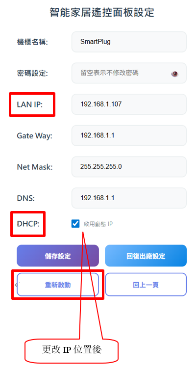
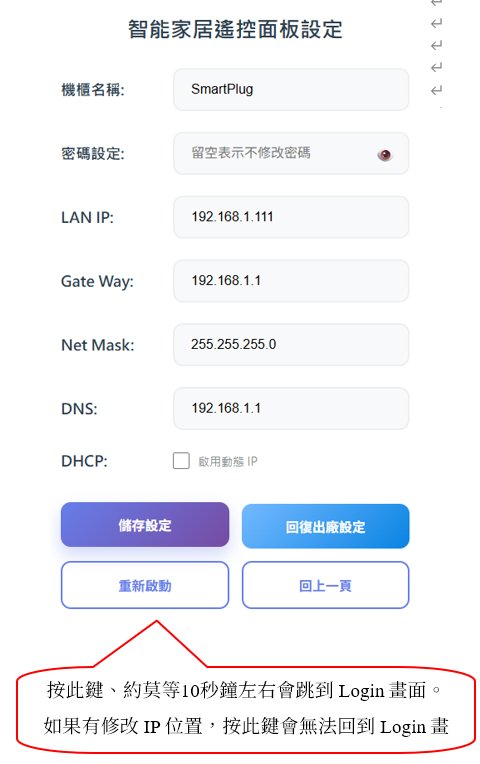

1. 硬體連接與啟動
請依照以下步驟完成硬體的基本架設：
- 將網路線（LAN）連接至智慧插座。
- 接上電源線，並等待設備完成啟動程序。
2. 登入管理介面
確保您的電腦或手機已連接至與設備相同的區域網路（Local Network）。
進入登錄頁面
開啟瀏覽器，於網址列輸入：http://smartplug.local
💡 Windows 用戶請注意：
若使用 Windows 電腦操作，請務必先安裝 "Bonjour Service" 應用程式，方可順利解析上述網址。
若使用 Windows 電腦操作，請務必先安裝 "Bonjour Service" 應用程式，方可順利解析上述網址。
輸入帳號密碼
輸入原廠預設密碼：123456，即可進入操作主頁面。
3. 網路參數設定 (IP 配置)
若改用固定IP登錄設備，請先點擊操作頁面中"系統設定"按鍵，務必遵循下列關鍵步驟：
步驟 A：取消 DHCP 功能
您必須先取消勾選 DHCP (啟用動態 IP) 選項，參考下圖：

圖示：使用固定IP登錄，須將「啟用動態 IP (DHCP)」取消勾選
步驟 B：儲存設定
完成任何更改後，請務必點擊「儲存設定」按鈕，系統會顯示「設定已成功儲存」訊息，此時才代表設定真正寫入完成。
4. 重啟與注意事項
設定完成後，關於「重新啟動」功能有重要的操作規範：
重新啟動的操作
一般情況下，按下「重新啟動」按鍵後，約等待 10 秒鐘左右，瀏覽器會跳出視窗做下列說明：
⚠️ 重要訊息提醒：
若您剛剛修改了IP位址，也取消DHCP勾選，「重新啟動」後：
1. 系統改採靜態IP登錄，無法再使用http://smartplug.local登錄
2. 需在瀏覽器位址列手動輸入新設定的IP，才能夠重新進入登錄頁面
3. 若無必要，請不要隨意更改Gat Way, Net Mask, DNS的設定值
若您剛剛修改了IP位址，也取消DHCP勾選，「重新啟動」後：
1. 系統改採靜態IP登錄，無法再使用http://smartplug.local登錄
2. 需在瀏覽器位址列手動輸入新設定的IP，才能夠重新進入登錄頁面
3. 若無必要，請不要隨意更改Gat Way, Net Mask, DNS的設定值

圖示：若修改IP，請手動輸入IP重新進入登錄頁面
5. 故障排除
萬一忘記了修改後的IP位址或修改過的登錄密碼，重新啟動後會無法連線：
此時請長按設備上的「回復出廠設定」(Restore Factory Settings) 按鈕3秒，將會把所有的設定值還原為出廠預設值(包括登錄密碼)。